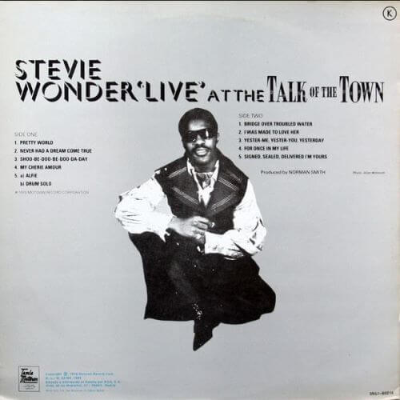
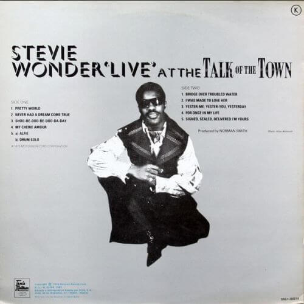

Live At The Talk es una grabación en directo de un joven Stevie Wonder con 21 años recién cumplidos y asumiendo el
control creativo de sus trabajos para la Motown.
Se trata de una grabación efectuada en el Reino Unido con la producción de Norman Smith, basada en sus éxitos de la
última parte de la década de los 60, incorporando una consistente versión del "Bridge Over Troubled Water" de Simon & Garfunkel y una primera
escucha de "Signed, Sealed, Delivered (I'm Yours)", todo un clásico de Stevie Wonder antes de lanzarse en un álbum de estudio.